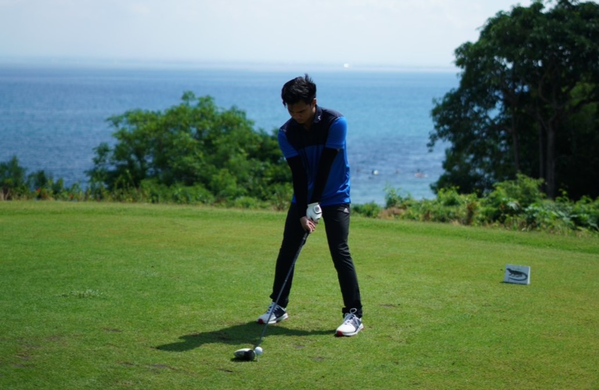

Hi! I am Verrell
I am Verrell Reyhan Deandrew, a student of International Relations at Tokyo International University. I have created a personal website to share more about myself and my hobbies. On my site, you'll find information about my background, interests, and the activities I enjoy. Whether it's my passion for cooking, love for golf, or my interest in sports, you'll get to know me better through my website. Visit my site to learn more about who I am and what I love to do.
-

I absolutely love playing golf, enjoying the challenge and tranquility it brings. It's my favorite way to relax and compete.
Click to read more -
I absolutely love cooking, finding joy in creating delicious meals. It's my way to relax and express my creativity.
Click to read more -

I love playing soccer; it's one of my favorite way to stay active and have fun and stay healthy.
Click to read more